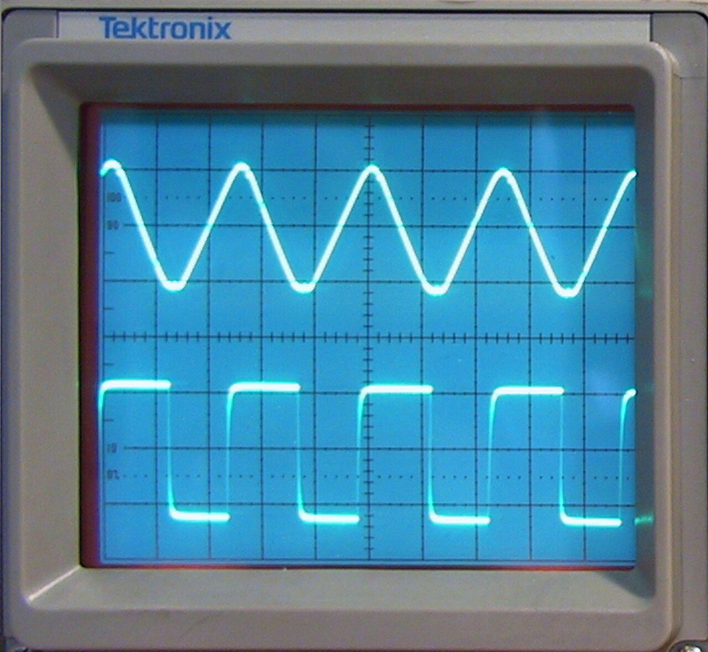

<h1>Inxhinieri elektrike - Senior - M2 — Sistemet dhe reagimi</h1>
<figure class="photo"></figure>


<ul>
<li>Sistem rendi 1: τ = R·C</li>
<li>Pas t = τ, hyrja hapi arrin ~63,2%</li>
<li>Pas 5τ ≈ 99,3%</li>
<li>Reagim negativ: A_cl = A/(1+A·β)</li>
<li data-aoi="kritike" data-critical="true">Reagimi negativ rrit stabilitetin dhe ul shtrembërimin</li>
</ul>

